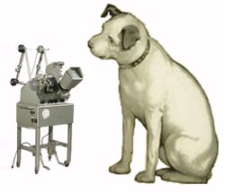

Giba Assis Brasil


No século passado, os filmes eram montados em moviolas. Ou não eram, mas eram. No Brasil, particularmente, quase todos os montadores trabalhavam em mesas de montagem Kem, ou Steenbeck, ou Prevost, ou Intercine - mas em geral diziam "vou pra moviola", "passei o fim de semana na moviola" ou "vamos resolver isso na moviola".
Normal. Em inglês isso se chama "genericized trademark", marca que se tornou genérica. Quem convida um amigo pra "tomar umas bramas" também pode estar pensando numa Skol, ou até preferir a Schincariol, sei lá, tem gosto pra tudo. Se alguém pede um bandeide pra tapar uma ferida, não vai reclamar ao receber um Kura kort, ou será que vai? Quem é que nunca tirou xerox numa copiadora Nashua? Já faz décadas que as pessoas consomem Ping-pong, Babaloo ou Trident, mas continuam mascando chiclete - e isso que o Chiclete original não era nenhuma brastemp.
Como no caso da moviola, é uma questão de precedência: o primeiro nome que chegou, pegou. E o que me interessa aqui é descobrir de onde, afinal, veio o nome da tal maquininha. Meu primeiro palpite, quase óbvio, era que MOVIOLA não teria apenas influência do inglês MOVIE, mas também do italiano, através do sufixo -OLA. Achei que este ó, aberto, tinha um jeito de ser italiano. Mas não é tão simples assim. Nunca é.
O inventor do aparelho, Iwan Serrurier, era um holandês residente nos EUA, mas cuja origem familiar (imagino eu, pelo nome) era provavelmente francesa. O que ele queria criar, lá por 1917, não era um aparelho para montar filmes (como terminou sendo), mas uma espécie de projetor caseiro, e por isso o nome, finalmente patenteado em 1924, se inspirou na VICTROLA.
Bom, a VICTROLA era aquele primitivo toca-discos caseiro com um grande "chifre", desenvolvido em 1906 por Emile Berliner (outro emigrado para os EUA, no caso, da Alemanha) para a Victor Talking Machine Company, mais tarde RCA Victor. Um ano depois, a Columbia lançou um aparelho parecido e seguiu a tendência, batizando-o de GRAFONOLA. Mas foi a victrola (depois vitrola) que ficou como sinônimo de toca-discos antigo, ou de pessoa tagarela.
Segundo Mark S. Chester, professor de economia na Pennsylvania (e como será que um professor de economia veio a se meter nesse assunto?), o sufixo -OLA entrou na VICTROLA por analogia com um aparelho mais antigo, a PIANOLA. E a Pianola, por sua vez, era aquele piano que tocava sozinho e que foi patenteado em 1897 por Edwin Votey, este um norte-americano de nascimento.
Mas então: se o "ola" da Moviola veio de Victrola, que veio de Pianola, de onde afinal veio o "ola" da Pianola?
Segundo o "Online Etimology Dictionary", o sufixo talvez tenha vindo de VIOLA, supostamente como sentido diminutivo: a pianola seria um piano menor, um piano que se toca como uma viola. O Etymonline aponta o mesmo caminho que o professor Chester: "A popularidade da pianola levou a uma onda de nomes de produtos terminados em -OLA, especialmente VICTROLA (1906)."
O mesmo dicionário sugere que VIOLA provavelmente venha de VITULA, a deusa romana da alegria, celebrada em 8 de julho, o dia VITULATIO. O que nos leva, finalmente, à Itália. Mas a volta é muito longa e preenchida demais por suposições pra fazer um sentido completo, pro meu gosto.
Mas o fato é que o mais duradouro instrumento de trabalho dos montadores foi inventado e denominado para ser um aparelho doméstico: assim como a victrola trazia pra dentro de casa a sala de concertos, a moviola se propunha a domesticar o cinema. O que terminou acontecendo, mas por outros meios.

a moviola é a da esquerda
TEM MAIS
Tem uma boa história da invenção da moviola.
Tem as suposições de Mark Chester sobre o uso do sufixo -OLA.
E tem o Dicionário Etimológico Online, em inglês.

Caro Giba, Quando vi pela primeira vez o "Ilha das Flores" trabalhava como estagiário aqui em Bh em uma moviola . O Marcos Cotta, que me iniciou na "Steenbeck" de mesa na extinta MinasFilme poderia ter se tornado um bom montador se não tivesse morrido de raiva, coitado. Mas naquela maquininha conheci grande parte do acervo de cine jornais mineiros - bem como do acerdo do Higino Bonfioli um dos primeiros cinegrafistas da nova Capital. Minha tarefa (acho que no ano de 89) era relacionar o conteúdo das imagens com os números de borda de copiões e das sobras. Depois sentava em um computador novíssimo (kkk) o CP 500 da Prológica e catalogar o acervo da produtora. Às vezes, quando o raivoso Cotta estava doidão, cortava e colava pontas e sobras que encontrava em latas, como no clássico Cinema Paradiso. Mais tarde, ao ver o Jorge Furtado montar aquela cena de arquivo no Maracanã com balões ele filmou pensei: poxa, o que podemos fazer com cenas de arquivo e uma boa moviola... O arquivo da MinasFilme/HiginoBonfioli foram para o CRAV, mas e "Steenbeck" da viúva, que fim levou? Abraço do Markim
Parabéns pela publicação sobre a Maviola, foi bastante esclarecedor para mim.
Oi, Marcos. Desculpe a demora. Com as mudanças no sítio da Casa eu terminei perdendo alguns comentários. Boa pergunta: que fim levou a Steenbeck da MinasFilme? Será que alguém sabe? Abraço.